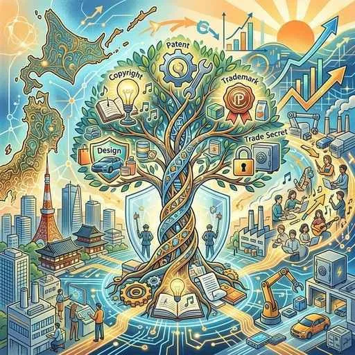

3. 基本的人権の尊重と新しい人権
日本国憲法が保障する「基本的人権」は、私たちが生まれながらに持ち、国であっても侵すことのできない永久の権利です。しかし、人権といってもその中身は様々であり、時代の変化とともに新しい権利も主張されるようになっています。今回は、人権の種類と分類、そして人権同士がぶつかったときのルールを徹底的に整理します！
1. 基本的人権の３つのグループ
日本国憲法が保障する基本的人権は、大きく３つの柱に分かれます。それぞれの違いと重要語句をマスターしましょう。
① 平等権（びょうどうけん）
すべての人が差別されず、平等に扱われる権利。憲法第14条に「法の下（もと）の平等」が定められています。性別、人種、信条、社会的身分などによる差別の禁止がうたわれています。
- 男女共同参画社会基本法：男女が対等に活躍できる社会を目指す法律。
- バリアフリー・ノーマライゼーション：障害の有無に関わらず、みんなが普通に生活できる社会づくり。
- アイヌ施策推進法：アイヌ民族の独自の伝統や文化を守り、差別を解消する法律。
② 自由権（じゆうけん）
国家から邪魔や干渉をされず、自由に生きる権利。「国家からの自由」とも呼ばれます。
- 精神（せいしん）の自由：心の中で何を信じ（信教の自由）、何を考え（思想・良心の自由）、どう表現するか（表現の自由）の自由。
- 身体（しんたい）の自由：不当に警察に逮捕されたり、拘束されたりしない自由。
- 経済活動の自由：住む場所や職業を自由に選ぶ（居住・移転、職業選択の自由）ことや、自分の財産を勝手に奪われない（財産権の保障）自由。
③ 社会権（しゃかいけん）
国家に対して、人間らしい最低限の生活を保障するよう求める権利。「国家による自由」とも呼ばれます。大正〜昭和初期にかけて生まれた比較的新しい権利です。
◆ 生存権（せいぞんけん・憲法第25条）─超頻出！
「すべて国民は、健康で文化的な最低限度の生活を営む権利を有する。」
この条文を根拠に、生活保護制度や社会保障制度がつくられています。
◆ 教育を受ける権利（憲法第26条）
すべての国民が、能力に応じて等しく教育を受ける権利。これにより、義務教育は無償とされています。
◆ 労働基本権（ろうどうきほんけん・労働三権）
労働者が使用者に対抗するために認められた権利。
・団結権（だんけつけん）：労働組合を作る権利。
・団体交渉権（だんたいこうしょうけん）：給料などの条件を会社側と交渉する権利。
・団体行動権（だんたいこうどうけん・争議権）：ストライキを行う権利。
2. 人権を守るための権利と「国民の義務」
人権を実際に使ったり、侵害されたりしたときに国に救済を求めるための「手段としての権利」があります。
- 参政権（さんせいけん）：選挙で投票する「選挙権」や、選挙に立候補する「被選挙権」、最高裁判所裁判官の「国民審査」など、政治に参加する権利。
- 請求権（せいきゅうけん）：人権を侵害されたときに裁判を求める「裁判を受ける権利」や、国に損害賠償を求める「国家賠償請求権」など。
◆ 国民の三大義務（さんだいぎむ）
人権が保障される一方で、国民には果たさなければならない３つの責任があります。
1. 子どもに普通教育を受けさせる義務（親が子どもに）
2. 勤労（きんろう）の義務（働くこと）
3. 納税（のうぜい）の義務（税金を納めること）
3. 時代の変化による「新しい人権」と「公共の福祉」
インターネットの普及や公害問題など、戦後に生じた社会の変化に対応するために、憲法には直接書かれていませんが新しく主張されるようになった権利があります。
① 新しい人権の例
- 環境権（かんきょうけん）：健康で快適な環境を求める権利。これをもとに、開発前に自然への影響を調べる「環境アセスメント（環境影響評価）」が法律で義務付けられました。
- プライバシーの権利：私生活を勝手に公開されない権利や、自分の個人情報を管理する権利。これをもとに「個人情報保護法」が作られました。
- 知る権利：政治や国の情報を公開するように求める権利。これをもとに「情報公開法」が作られました。
- 自己決定権：医療で治療方針を自分で決めること（インフォームド・コンセント）や、自分の生き方を自分で決める権利。

図1：プライバシーの権利や知る権利など、現代社会に対応した新しい人権のイメージ
② 人権の衝突を調整する「公共の福祉」
人権は最大限尊重されるべきですが、自分勝手に行って他人の人権を侵害してはいけません。例えば、「表現の自由だから」といって他人のプライバシーを暴くことは許されません。
このように、「お互いの人権がぶつかり合ったときに、社会全体の利益を考えて調整する基準」のことを、憲法では公共の福祉（こうきょうのふくし）と呼びます。社会全体の平和や安全のために、人権は一定のルールによる制限を受けることがあります。
🔥 この単元のテスト対策・暗記のコツ
-
★
憲法第25条「生存権」の書き取り（超頻出）：
・記述・穴埋め：「すべて国民は、健康で文化的な最低限度の生活を営む権利を有する。」の太字部分は、漢字の書き間違え（特に最低限度）がないように完璧に暗記してください。 -
★
労働三権（労働基本権）と労働三法の区別：
・権利（三権）＝ 団結権、団体交渉権、団体行動権（争議権）
・法律（三法）＝ 労働基準法、労働組合法、労働関係調整法
※「権利」を聞かれているのか「法律」を聞かれているのか、問題文をよく読みましょう。 -
★
「三大原則」と「三大義務」のひっかけ：
・原則 ＝ 国民主権、人権尊重、平和主義
・義務 ＝ 教育を受けさせる（普通教育）、勤労、納税
※「平和主義」は原則ですが、義務ではありません。選択肢問題でよく混同を狙われます！ -
★
「公共の福祉」の記述対策：
・記述：「人権の保障に関して、公共の福祉はどのような役割を果たすか。」
・解答：「お互いの人権が衝突したときに、社会全体の利益を考えて、それぞれの権利を調整する役割。」